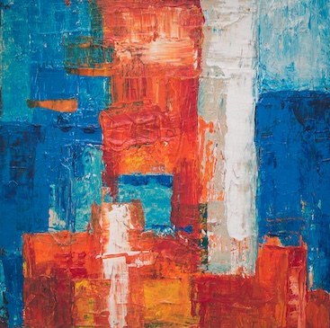
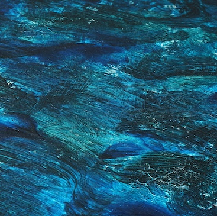
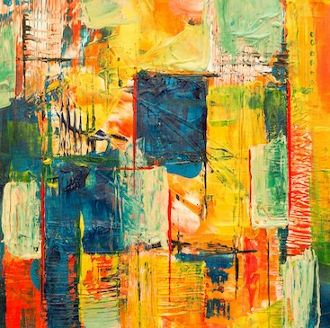

L’exposition « Éclats du Silence » présente le travail de Thomas Guiho,
artiste franco-suédois mêlant peinture, sculpture et lumière. Ses œuvres
explorent les traces invisibles laissées par le temps et la mémoire. À travers
des matières translucides et des jeux d’ombres, il invite le spectateur à écouter
le silence des formes. Cette exposition propose un voyage sensoriel entre absence
et présence. À découvrir du 3 novembre au 15 janvier à la Galerie des Horizons.
Chaque pièce de Thomas Guiho semble suspendue entre rêve et réalité, capturant
l’instant avant qu’il ne s’efface. L’artiste joue avec la fragilité des matériaux
pour évoquer la force du souvenir.

“Matin printanier”, Léa pagallie

“Tempête Immobile”, Maelys Riven

Nouveautés


“Oranger”, Guillaume Da pastora
Nouveautés
"Levé du soleil", Christophe Wes
"Voyage en mer", Ambre Batelle
"Chaleur froide", Étienne Dune
"Ville éclairée", Luisa Alvario